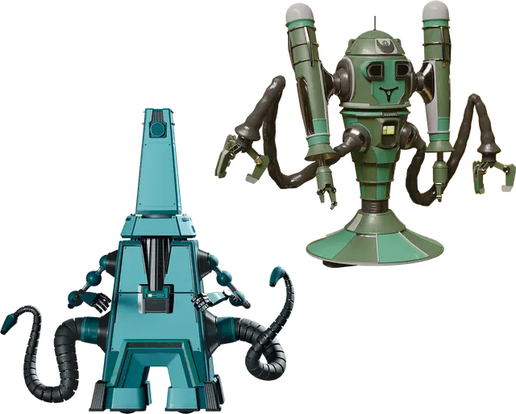

Рабочий робот
Worker Robot
Средний Конструкт, нейтральный

Класс Доспеха 13 (природный доспех)
Хиты 75 (10к8 + 30)
Скорость 30 футов, лазая 30 футов
| мод | спас | ||
|---|---|---|---|
| СИЛ | 20 | +5 | +5 |
| ЛОВ | 9 | −1 | −1 |
| ТЕЛ | 16 | +3 | +3 |
| мод | спас | ||
|---|---|---|---|
| ИНТ | 10 | +0 | +0 |
| МДР | 12 | +1 | +1 |
| ХАР | 10 | +0 | +0 |
Навыки Атлетика +9
Сопротивление урону кислота, огонь
Иммунитет к урону холод, яд
Иммунитет к состояниям истощение, отравление
Чувства тёмное зрение 60 футов, пассивное Восприятие 11
Языки Общий плюс языки на которых говорит его создатель
Опасность 3 (700 опыта)
Бонус мастерства +2
Особенности
Перегрузка электричеством. Когда робот получает урон электричеством, он должен преуспеть в спасброске Телосложения Сл 10, иначе станет ошеломленным до начала своего следующего хода.
Действия
Мультиатака. Робот совершает две атаки Погрузочным щупальцем.
Погрузочное щупальце. . Рукопашная атака оружием: +7 к попаданию, досягаемость 10 фт., одна цель. Попадание: 9 (1к8 + 5) дробящего урона. Если цель — существо Среднего размера или меньшего, то оно становится схваченным (Сл высвобождения 15). У робота есть два погрузочных щупальца, каждое из которых может держать в захвате по одной цели за раз.
Притягивающий луч. Робот накладывает заклинание телекинез [telekinesis], нацеливаясь только на недееспособное существо или объект. Роботу не требуется компоненты для накладывания этого заклинания и он использует Мудрость в качестве базовой характеристики для этого заклинания.
Описание
Роботы являются Конструктами, созданными для тяжелого труда, повседневных задач и караульной службы. Несмотря на прочную конструкцию роботов, их схемы подвержены перегрузкам при воздействии сильных токов электричества.
У робота есть пара маленьких щупов для мелкой моторики и манипулирования предметами, а также два большие конечности, специализированных под конкретную роль. Роботы запрограммированы на рассудительность, понимание и, как правило, преданность своим создателям. Несмотря на это, некоторые из долго существующих роботов развивают свои собственные личности и разум.
Роботы, которые долгое время находятся в изоляции, подвергаются плохому обращению или небрежному отношению, склонны к сбоям в работе. Некоторые роботы впадают в уныние или становятся жестокими, другие навязчиво повторяют последнее указание или преследуют новые, особые цели.
Рабочий робот
Рабочие роботы созданы для физического труда, например, для погрузки, строительства и технического обслуживания, хотя некоторые рабочие роботы выполняют и общественно полезные функции. Антигравитационная технология и встроенные тяговые лучи позволяют рабочим роботам без труда поднимать грузы и прочие тяжелые предметы своими механическими щупальцами, которые служат оружием в случае угрозы или когда их призывают на защиту.
Голос рабочего робота зачастую прагматичен и запрограммирован на использование простых фраз без излишеств. Рабочие роботы, которые должны находиться на виду – к примеру, курьеры, ремонтники или перевозчики, – обладают голосами, которые в той или иной мере подражают голосам их создателей. Подобные роботы используют смягчающие фразы или способны вести поверхностные, но приятные беседы.